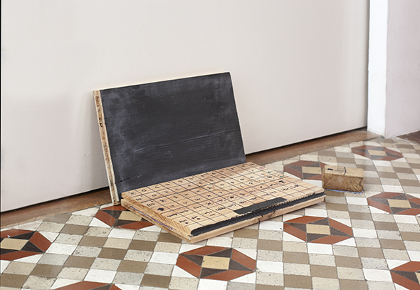
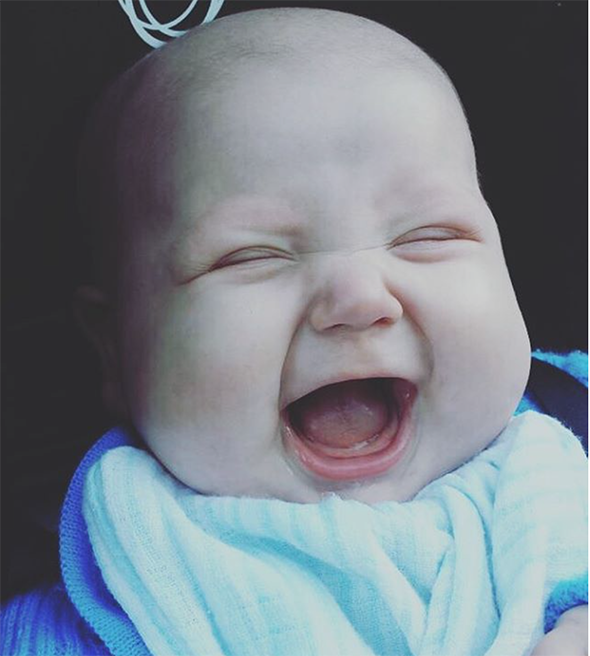
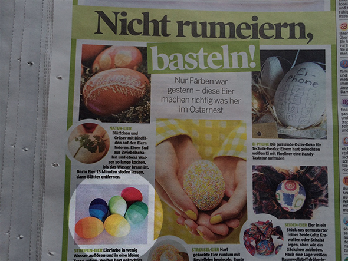
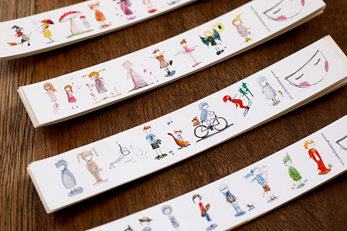
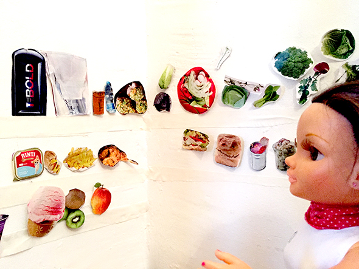

Pinterest
Instagram
ES
EN
DE
☰ Menü
Home
Das Haus
Zubehör
Dekoration
Faltanleitung
Illustration
Trinkflaschen
Bastelheft
App
Blog
Feste
Weihnachten
Ostern
Halloween
Fasching & Kostüme
Valentinstag
Geburtstag
Mutter-/Vatertag
Schulanfang
Jahreszeiten
Frühling
Sommer
Herbst
Winter
Was machen
Spielzeug
Spiele
Druckvorlagen
Essen & Rezepte
Dekoration
Malen
Experimente
Draußen
Lernen
Tiere
Geschenke & Schmuck
Bauen & Tricks
Weitere Ideen
Material
Papier
Karton
Papierrollen
Recycling
Steine
Blätter & Natur
Stoff & Nähen
Start
›
Blog
Blog
Feste
Weihnachten
68
Ostern
41
Halloween
26
Fasching & Kostüme
36
Valentinstag
15
Geburtstag
13
Mutter-/Vatertag
4
Schulanfang
10
Jahreszeiten
Frühling
19
Sommer
42
Herbst
22
Winter
32
Was machen
Spielzeug
79
Spiele
125
Druckvorlagen
47
Essen & Rezepte
95
Dekoration
94
Malen
64
Experimente
19
Draußen
64
Lernen
67
Tiere
111
Geschenke & Schmuck
89
Bauen & Tricks
81
Weitere Ideen
46
Material
Papier
92
Karton
61
Papierrollen
23
Recycling
121
Steine
33
Blätter & Natur
52
Stoff & Nähen
42
Aktivität
Luftballonhund-Brosche
Aktivität
Nachwachsendes Gemüse
Druckvorlagen
Bunte Einladungen mit Zuckerkette
Material
Noahs Papierstadt
Material
Flaschenlichter für die Party
Spielzeug
Laptop aus Holz

Ein Bastelheft, in dem du der Autor bist
Material
Nussschalenboote mit Wachs
Aktivität
3D-Landschaft in der Dose
Aktivität
Sardinen-Memory
Ohne Kategorie
#1motivomilrazones

Aktivität
Kartonwald für Playmobil
Spielen
Mühlespiel mit Eukalyptus
Spielen
Team Eukalyptus!
Aktivität
Riesen-Wackelaugen
Animal
Hasentüten ohne Nähen
Anlass
Frohe Ostern!
Animal
Osterschnecken
Anlass
Tätowierte Eier
Wir sind in der Bild am Sonntag

Material
Meer in der Sardinendose
Figuren-Lesezeichen

Spielzeug
Puppenküche an der Wand

Aktivität
Origami-Boot-Girlande
← Neuere
Seite 4 / 39
Ältere →